Blog
彼得潘的 App / AI Neverland
分享 iOS App、Flutter、Python 和 AI 開發的教學文章與心得，陪你飛向程式的夢幻島。
App / AI 開發的教學文章
從 Swift、SwiftUI、Flutter、Python 到 AI，彼得潘在 Medium 持續寫下每一篇開發筆記與教學，帶著大家一起成為 App 開發魔法師。
前往 Blog →
iOS Swift・SwiftUI・Flutter・AI・Python・VIBE CODING
正職：作家 & 果粉
副業：Blog 作家、講師、大學的 iOS SwiftUI / Flutter App / Python 開發講師、家教、企業內訓、VIBE CODING 陪跑教練、工程師、AI 顧問、評審、接案、iOS App 社團講師
Blog
分享 iOS App、Flutter、Python 和 AI 開發的教學文章與心得，陪你飛向程式的夢幻島。
從 Swift、SwiftUI、Flutter、Python 到 AI，彼得潘在 Medium 持續寫下每一篇開發筆記與教學，帶著大家一起成為 App 開發魔法師。
前往 Blog →
開發教室
學生們精心創作的作業，每一份都是通往 App 開發魔法師的足跡。
家教
彼得潘遇到許多朋友有開發 iOS / Android App 的需求，他們的目的是利用 AI 完成 App，而不是從頭開始學寫程式。隨著 AI 的進化，透過 AI 完成 App 不再是天方夜譚，然而 App 的開發跟上架有許多要注意的眉角和問題，彼得潘將帶著你一步步透過 AI 完成你想要的 App。
了解更多 →程式開發是段連續思考的過程，很多人在過程中卡關溺水，游不到終點。傳統的教學方式只看到結果，只能告訴學生正確的解法；然而當問題稍稍改變，他們馬上迷失方向，因為真正的問題發生在開發思考的過程裡，從來沒被解決。一對一家教正是找出問題的最佳解藥 — 彼得潘將死命盯著身旁學生的螢幕，觀察他撰寫程式的過程，發現他在某一分某一秒開始走偏，即時地拉他一把，帶領他游向幸福的彼岸。
了解更多 →講座課程
成為酷炫的 App 開發魔法師，實現 App 工作、接案、創業的第二人生！完整課程講座清單 →
2026/7/13 ~ 2026/8/31，每週一和四 19:00 ~ 22:00
學習 iOS App 開發的最新技術：SwiftUI、Swift、iOS SDK、Xcode，成為酷炫的 iOS App 開發魔法師！
2026/3/10 ~ 2026/5/26，每週二 19:00 ~ 22:00
專為文組生量身訂做，從零開始學程式，一步一步慢慢教！只要 12 個星期，每週一個晚上，即可學會程式設計的核心概念。
2026/3/12 ~ 2026/5/4，每週一和四 19:00 ~ 22:00
學習 iOS App 開發的最新技術：UIKit、Swift、iOS SDK 和 Xcode，實現未來 App 工作、接案、創業的第二人生！
2026/1，臺灣大學資訊系統訓練班
學習 Flutter 跨平台 App 開發的最新技術：Dart、Flutter SDK、VS Code，成為酷炫的 Flutter App 開發魔法師！
2026/2 ~ 2026/6
海洋大學資工系 Flutter 跨平台 App 開發課程。
2025/9 ~ 2026/1
海洋大學資工系 SwiftUI iOS App 開發課程。
2026/2 ~ 2026/6
Python 程式語言與資料處理課程。
前兩天半為 APCS 課程，從最夯的程式語言 Python 語法打基礎，以輕鬆有趣的互動式授課，幫助學生逐步了解 APCS 觀念與題型演練。
帶著同學開發一個媲美上架 App 的社群 App，掌握 iOS App 工程師必備的 REST API 串接技術。
專屬於初學者的手做 iOS App 課程，親手打造自己喜歡想用的 App，安裝在自己或家人朋友的 iPhone 上。
iOS 13 的 SwiftUI 發明後，一首歌的時間就能製作更厲害的 App，快速開發 iPhone、iPad、Mac 三合一的 App。
傳授關於 Auto Layout 和 Stack View 的一切機密，打造滿足各種尺寸的 App 畫面再也不是難事！
以書籍《彼得潘的 Swift 程式設計入門》為主，12 小時熟悉 Swift 的各項語法和功能！
專為文組生量身訂做，從零開始學程式，2 個週末 14 個小時開發出人生的第一個 iOS App！
分享身為果粉多年學習開發 App 的心路歷程，幫助更多人勇敢踏出第一步。
WWDC17 大解密！分享那些我們夢寐以求和出乎意料的全新功能。
一邊享用精心製作的手工布朗尼，一邊親手打造美味甜點 App 或自己喜歡主題的 App。
專為台大文組生量身訂做，6 個星期學會程式設計的核心概念。
適合初學者的 iOS App 教學課程，自基礎的 Xcode、Swift 及 Cocoa Touch Framework 出發，教你一步步做出夢想中的 App。
結合藝術與 App，帶領學生從無到有創作獨一無二的國美魔法 App。
以淺顯易懂的 Swift 語言介紹程式設計的基本概念，讓你第一次就愛上程式設計！
每個人都有著創作 App 的天份，是時候將它開啟了！
專屬於女孩們的手做電子書 App，7 個小時打造自己喜愛主題的電子書 App。
七個主題：網路後台串接、表格應用、照片牆、Stack View、Facebook、地圖定位、App 分析技術。
愛情專屬 App，情人節禮物創意首選！
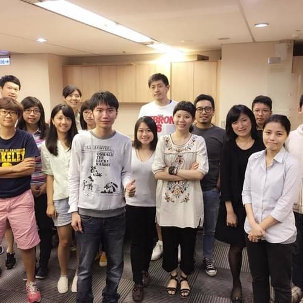
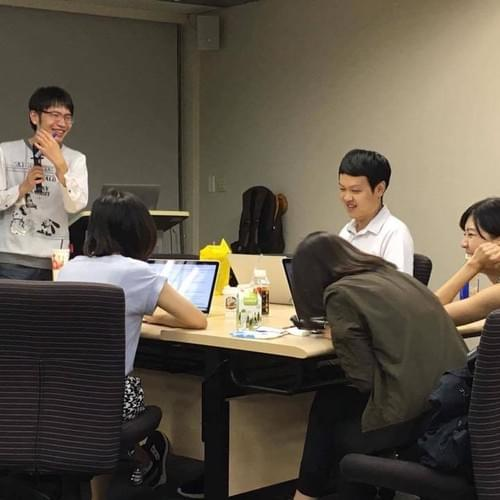
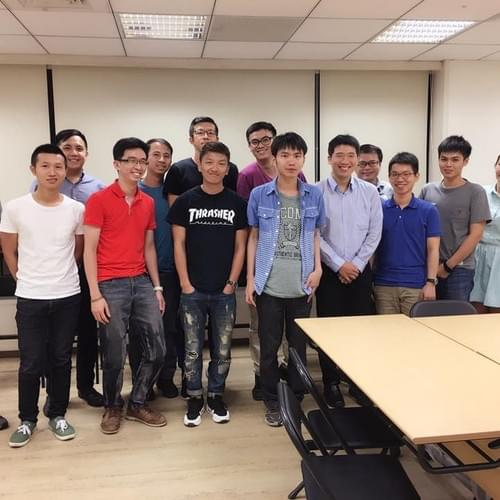
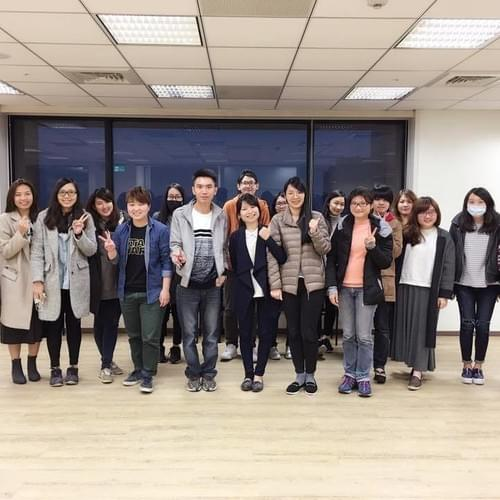
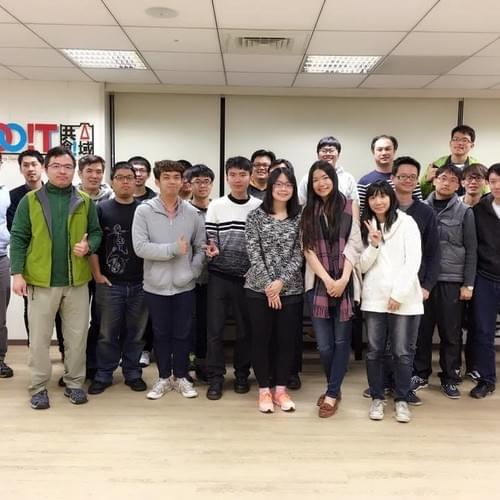
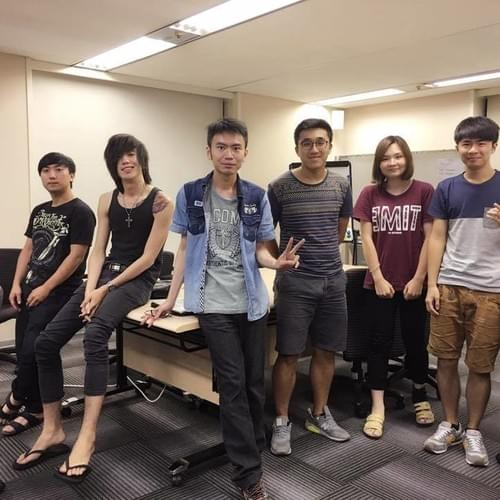
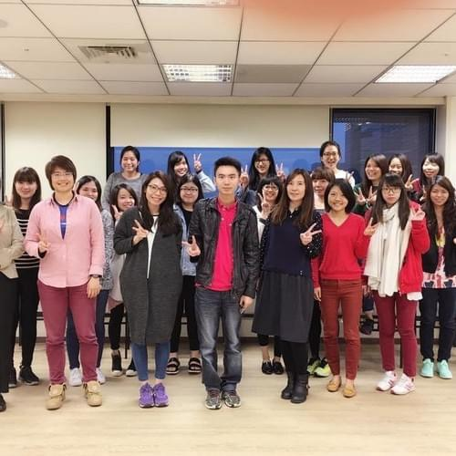
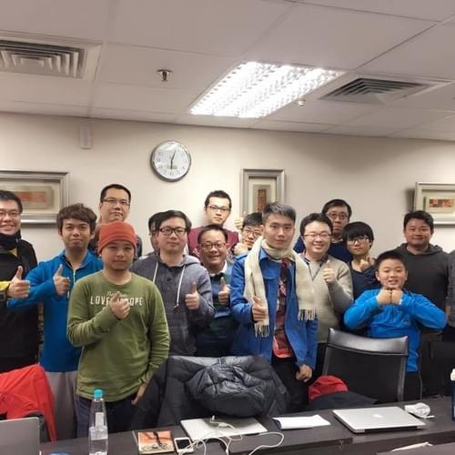
著作
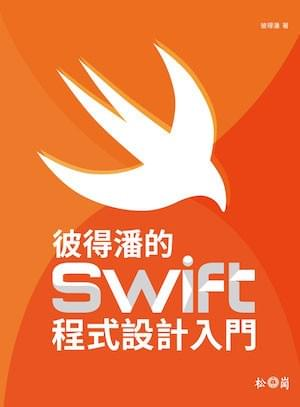
2017.12 出版
🏆 博客來電腦類新書榜 Top 2、金石堂電腦類新書排行榜 Top 1
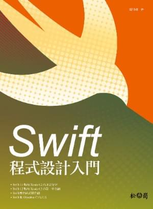
2015.3 出版・Swift 3.0 版線上修訂補充包
🏆 博客來電腦類暢銷榜 Top 3、新書榜 Top 2、PC home 電腦類新書排行榜 Top 2、金石堂電腦類新書排行榜 Top 3
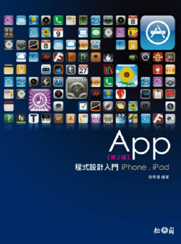
2012.2 出版
🏆 博客來電腦類 Top 1、博客來 2012 年度百大電腦類 Top 6、天瓏銷售排行 Top 1、PC home 電腦/攝影 Top 1
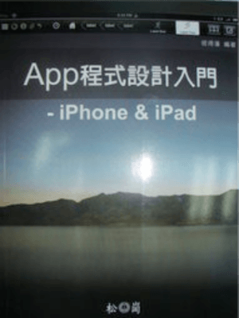
2010.11 出版
🏆 iThome 2011 年 100 大 IT 好書推薦
App 作品
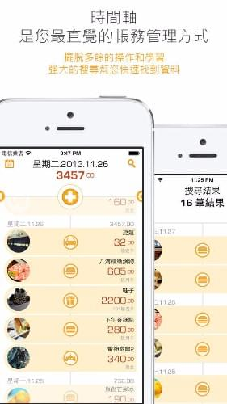
🏆 台灣 Finance Top 1・台灣不分類 Top 2・中國 Finance Top 2
拍照記帳，記錄每一次購物的美麗回憶！獨家的照片展示模式加上美觀的介面，帳簿就是一本日記本；時間軸瀏覽與管理帳務，簡單直覺。
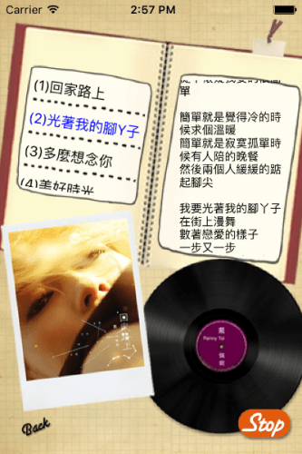
彼得潘為偶像 Penny 製作的專輯 App！控制 CD 轉盤聆聽 Penny 的溫暖歌聲，觀賞精彩 YouTube MV。
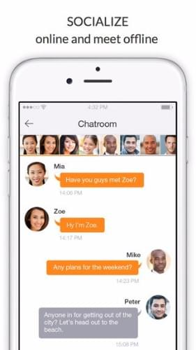
Apart connects your circle of friends with other circles in your city. Create a crew, discover and socialize with new and interesting people nearby.
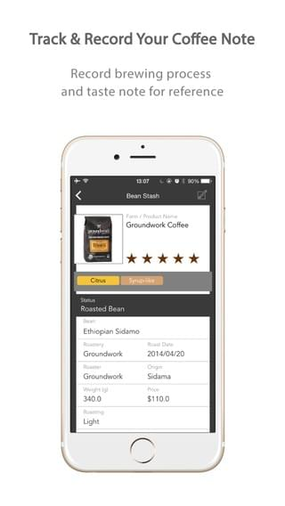
🏆 2014 SCAA Best New Product・2014 SCAA People's Choice Award
首創「咖啡沖煮記錄圖」，藉由 App 連結 acaia 咖啡秤觀察咖啡沖泡的情況，提供你探索精品咖啡世界無限的可能。
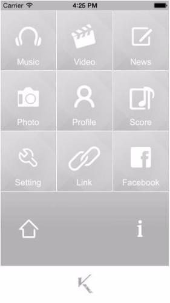
V.K official app contains all the latest information including profile, news, photos, event schedule, music videos and latest songs tracks.
mini Hana 米花兒，心花朵朵開時會冒出的可愛生物。
🏆 台灣 Health & Fitness Top 2・2012 TIDCA 評審推薦獎・2012 數位時代「最佳企業 App」・2012 Mobile App 大賽潛力合作獎
參加活動，記錄軌跡，分享你運動的驕傲！
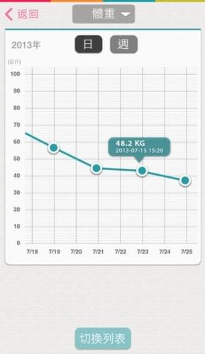
🏆 最高排名 Health & Fitness Top 3
計算每天飲食熱量，設定專屬自己的減重計畫。體重趨勢圖、飲食資料庫、多樣的記錄項目。
最標準的英文發音，最超值的升學單字書！
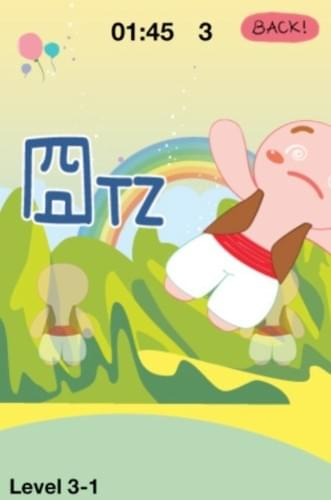
努力地吹走薑餅人！多種薑餅人角色，多道關卡。
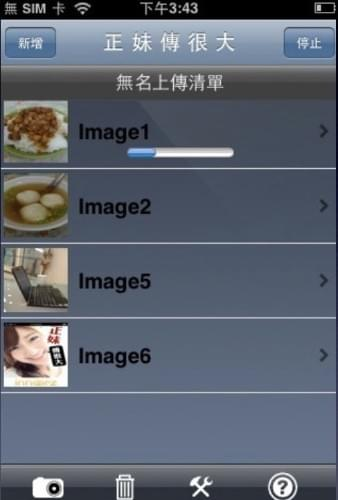
照片上傳列表、選擇相片、無名帳號設定，輕鬆上傳照片。
散文集
MacToday App 開發專欄，2011.02 ~ 2014.10。從「認識 Xcode 4 與 iOS SDK，寫出第一個 Hello World 程式」到「全面進化的 Swift enum」，四年不間斷的專欄寫作。
經歷
聯絡
當彼得潘回答大家的問題時，其實也在找答案的過程中精進學習，增長了自己的功力，和大家交了朋友，獲得再多錢也買不到的回報和收獲。
apppeterpan@gmail.com
愛瘋一切為蘋果的彼得潘
每天分享 iOS App 開發的相關文章
deeplove.pan
私人帳號：deeplovepeterpan
官方帳號：@puy0405e